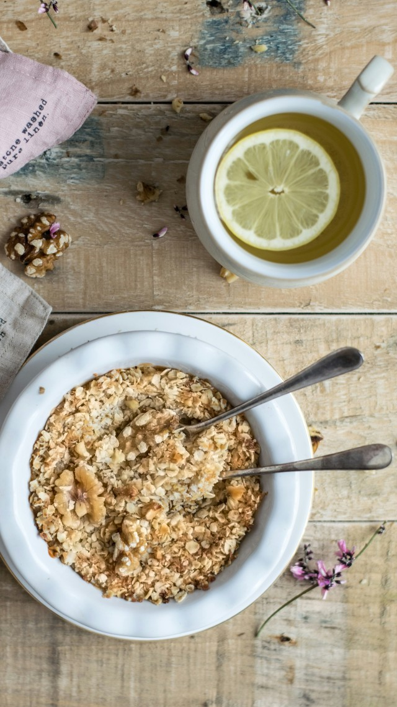

Oatmeal, done simply

Possibly the easiest, hardest-to-mess up oatmeal recipe you can imagine. Maybe
there would be value in me trying to add some depth to this? But simple is better.
If I had to provide any further comment, I'd say -- if you're me, go easy on the
water. It's all about the ratios, and I'd rather have oatmeal which is a little
tough than a soggy soupy mess.
Ingredients
-
1/2 cup of instant oats. The nutritional value of these is supposedly
identical to the tougher, more "raw" oat varieties.
- A reasonable amount of water -- you'll need a cup after boiling
- 1 heaping tablespoon of cinnamon; more to taste
- 1 pinch salt
-
Optional:
1 granny smith apple, sliced and dipped into 1/4 cup peanut butter
Steps to prepare
-
Add water to pan, sprinkling in a pinch of salt to taste.
Bring to a rolling boil.
- While the water is heating up, mix cinnamon and oats in a bowl.
-
If serving with apples, cut the apples and apportion the peanut butter between
each slice.
-
Once water finishes boiling, measure out 1 scant cup from the pan
and pour into your oatmeal. Stir thoroughly.
-
Let stand for 2 minutes until water is not visible or the oats look
sufficiently puffy.
Back to home